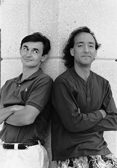

See if you can solve this programming puzzle, presented in the form of a dialog
between Konstantin Othmer (KON) and Bruce Leak (BAL). The dialog gives clues to
help you. Keep guessing until you're done; your score is the number to the left of the
clue that gave you the correct answer. Even if you never run into the particular
problems being solved here, you'll learn some valuable debugging techniques that will
help you solve your own programming conundrums. And you'll also learn interesting
Macintosh trivia.
KON So, BAL, it seems we need to increase our advertising budget to rope in more
guest Puzzle Page authors.
BAL People don't realize the fame and fortune that comes with being part of the Puzzle
Page. I heard that one person had a lot of good luck shortly after making her first
Puzzle Page submission.
KON I heard that another person who thought about submitting a column to the Puzzle
Page, but then decided not to, lost some valuable files.
BAL Enough chain letter tactics. Maybe if we write another column about QuickDraw
or QuickTime, someone will be hungry enough for a change of pace to submit his own
Puzzle Page.
KON I figure we should talk about the Internet and then take the Puzzle Page public!
$10 to $12 a share sounds about right to me. Then we can have some serious writing
bounties!
BAL Maybe we'll change the medium. Instead of printing it, we'll deliver it over TV.
KON OK, actually I do have a weird problem. It might be QuickTime-related. I'm
trying to do some video digitizing, but every time I bring up the Video Settings dialog to
choose a compression method, my machine locks up.
BAL Locks up? How? Dead cursor, no MacsBug, the works?
100KON The cursor is still alive. I can even go into MacsBug and choose Exit to Shell
and everything's fine. But I can't capture video since the dialog just hangs.
BAL What does the dialog look like when it hangs? Can you click in other
applications?
95KON The basic structure is there. It draws the outline of the Choose CODEC pop-up
menu, but there's no text. You can click all you want, but no context switch occurs.
You're stuck.
BAL I've never heard of that before. Why does this stuff always happen to you, KON?
KON Believe me, I'd love to know the answer to that puzzle!
BAL With all your problems, you should write a book on debugging.
KON Anyway, back to my QuickTime nightmare. Any ideas?
BAL Clearly, that case has worked for millions of people for a long time. Tell me
more. There's probably something funny about your machine.
90KON I have a Power Macintosh 8100/80. I had an HPV card but then traded
Shannon for his AV card. I tried to buy an AV card, but it's really hard to get one.
BAL You always have weird hardware and other stuff. What version of the system are
you running? This isn't some beta card again, is it?
KON I had version 7.1.2 originally, but as soon as I started having problems with
QuickTime I figured I'd take the opportunity to "upgrade" to System 7.5. All my
hardware is stock Apple stuff. I've written a lot of crazy programs, the results of
many of which have appeared in these pages, but the hardware seems to be kosher.
BAL Which version of 7.5?
KON I started with plain 7.5. Then I heard about the fix release, so I upgraded to
7.5.1. I put the project on hold for a while, and heard about a fix for the fix, so I
installed 7.5.2. There was a fix-cubed release, so now I'm running 7.5.3 and it still
happens. Maybe I should wait for 7.5.4?
BAL Come on, KON. Clearly the problem isn't related to a system release. You did a
clean install, right?
KON Last I heard, the magic incantation was to drag the Finder inside the Preferences
folder, rename the System Folder, jog around your chair three times, and say a
prayer.
BAL Did you sacrifice a frog?
85KON Seriously, the system install is fine.
BAL What version of QuickTime is it?
80KON QuickTime 2.1. That was the latest version I could find. Movies play back OK
-- it's just this capture thing that's giving me fits.
BAL I guess you've tried replacing QuickTime. Does this happen in other applications
as well?
KON I've tried three different applications. Every one has the exact same symptoms:
it locks up when it brings up the Video Settings dialog.
BAL On one level that makes sense. Applications just call QuickTime to put up that
dialog. But what doesn't make sense is that you have a clean system install, standard
Apple hardware, and the latest QuickTime version, and it hangs. That's crazy. Any
weird extensions or anything?
KON Nope. Totally clean install.
BAL Swap the hard drive.
70KON Still happens.
BAL Swap the video card.
60KON 60 and falling fast.
BAL The monitor?
KON Let's leave sense-line bugs for a later date. Now that you've swapped out the
whole system except the motherboard, the TV repairman approach is over.
BAL Fine. Give me MacsBug. I'll break into the debugger when the system hangs and
try to figure out what's going on.
50KON It looks like you're in the Font Manager routine RealFont, which is being
called from a loop in QuickTime. Here's what it looks like:
Disassembling from 1C5B562 'CDEF 0064 0F6E' +015B2 01C5B562 MOVEQ #$01,D0 |7001 +015B4 01C5B564 MOVE.W D0,-(A7) |3F00 +015B6 01C5B566 _TextFont ; 0019D0E4 |A887 +015B8 01C5B568 MOVEQ #$08,D6 |7C08 +015BA 01C5B56A BRA.S 'CDEF 0064 10E6'+015CA ; 01C5B57A |600E +015BC 01C5B56C SUBQ.L #$2,A7 |558F +015BE 01C5B56E MOVEQ #$01,D0 |7001 +015C0 01C5B570 MOVE.W D0,-(A7) |3F00 +015C2 01C5B572 ADDQ.W #$1,D6 |5246 +015C4 01C5B574 MOVE.W D6,-(A7) |3F06 +015C6 01C5B576 *_RealFont ; 408C2B2E |A902 +015C8 01C5B578 MOVE.B (A7)+,D7 |1E1F +015CA 01C5B57A TST.B D7 |4A07 +015CC 01C5B57C BEQ.S 'CDEF 0064 10E6'+015BC ; 01C5B56C |67EE +015CE 01C5B57E MOVE.W D6,-(A7) |3F06 +015D0 01C5B580 _TextSize ; 0019D18C |A88A
BAL Aha! It's starting to sound a little like a QuickDraw bug to me! What kind of
nastiness did you put in that code, KON?
40KON Not so quick, pal. RealFont is returning just fine. But the loop calling it
doesn't terminate.
BAL Well, RealFont just tells you whether a particular font size exists. QuickTime
calls RealFont to make sure that the drawing operation in the Video Settings dialog will
look good: if the requested font size doesn't exist, things will scale and look really ugly.
In that case, QuickTime increments the font size and keeps looking.
KON OK.
BAL These dialogs should be drawn with the system font. Is there some strange
problem with your fonts that persists across system installs? I thought I told you to
swap hard drives.
30KON I did a fresh install on a new hard drive and the problem continued.
BAL Hmm. It sounds like the bug is that QuickTime is searching for a system font size
that won't be scaled -- that is, that's real. It probably expects it to be there. If it's
not, QuickTime spins forever looking.
KON OK. So why can't it find it?
BAL What font are you looking for?
20KON The font ID passed into RealFont is 1 (AppFont), which RealFont converts
internally to the application font by reading the short at 0x984 (ApFontID).
BAL What font is it?
KON How do I figure that out?
BAL Call GetFontName. We don't even need to write a program to do this. You can hack
the stack from MacsBug. First, go to some trap call so that you know the proper
registers are saved and all of that. Subtract 6 from the stack. Put the address of where
you want the name to end up at the old stack address, and the fontNum, 1, after that.
Put the address of the GetFontName trap, 0xA8FF, at location 0, set the PC to 0, and
trace.
KON You should probably turn off EvenBetterBusError when doing this sort of thing.
BAL Well, yes, that's true. Or, alternatively, we could find a large free block
somewhere and put the code there. Of course, we'd have to be sure the call doesn't move
memory, or our code might be written over -- although for this single trap it doesn't
matter. Anyway, you get the idea.
KON The work you'll go through to keep from writing any real code! Wait. Where do I
get the memory for the name?
BAL You have three choices: you could have subtracted another 255 bytes or so from
the stack and just used that. Better yet is to use some of MacsBug's internal buffer.
When you use the dh command, MacsBug puts the hex data in a buffer and disassembles
it. The address in the disassembly is the address of the MacsBug buffer. Finally, you
could look for a free block with lots of space and use that.
10KON OK. The font name comes back 0.
BAL If you trust that, it means there's no font with that fontNum. So it makes sense
that QuickTime would never find a RealFont at any size for that fontNum.
KON So why didn't the system install fix it?
BAL The system font ID is stored in PRAM and is put in a low-memory global during
startup. Apparently the install process doesn't touch PRAM. Zap your PRAM by holding
Command-Option-Shift-P-R during startup -- user friendly!
KON OK. Now it works.
BAL So the installer should clear PRAM when a new system is installed. It should keep
your video card configuration and other settings, which really belong on the hard disk
as well, but should clear stuff like the default fonts since they may not exist, or they
might be renumbered, in the new install.
KON And QuickTime shouldn't spin in an endless loop expecting something to exist.
BAL PRAM is a holdover from the 128K Macintosh. It was designed as a closed system
that might never have a hard drive. At that time there were only floppies, so it made a
lot of sense to store system parameters with the machine rather than the media. But
since then, no one has ever revisited whether PRAM is needed.
KON The machine still has a ROM, for crying out loud! I guess it's too soon to give up
those silly incantations of rebuilding the desktop and zapping PRAM. By the way, I
understand the problem was worked around in QuickTime 2.5 by aborting the font
search loop at a maximum point size of 36.
BAL Nasty.
KON Yeah.
SCORING
| 90-100 | Yeah, sure. And you just had lunch with D. B. Cooper. |
| 70-85 | Congratulations! You've just qualified to write the next Puzzle Page. |
| 40-60 | Your spirit guides must be with you today. |
| 10-30 | Care to join our poker game?* |
KONSTANTIN OTHMER AND BRUCE LEAK dropped off this press release in lieu of
the usual biographical information:
PALO ALTO, California, April 1, 1996 -- BalKon Heavy Industries today announced
PuzzleMill (TM), a next-generation, low-cost, networked virtual puzzle architecture
for the World Wide Web, corporate intranets, infinity, and beyond. "Along with our
industry-standard Puzzle Page column, we've set the agenda for digital puzzling into
the next century," said BAL, BalKon's senior vice president for corporate
restructuring. BalKon's executive vice proconsul for corporate misconduct KON will
be acting as grist for the PuzzleMill until a sack of flour can be found to replace him.
KON let spill that the beta version of PuzzleMill can be downloaded free of charge from
http://www.always.balkon.com "until we achieve critical mass, at which point we'll
charge as much as we want for it, darn it."*
Thanks to Peter Hoddie, Josh Horwich, and Bo3b Johnson for reviewing this
column.*